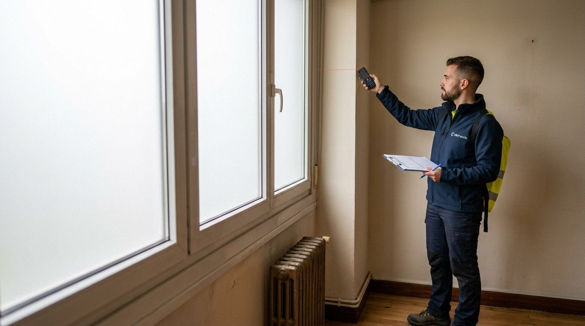

CEE-01
Piso o apartamento
Para vender o alquilar una vivienda en un edificio. Hasta 100 m².
desde90 €+ IVA
Vamos al inmueble, lo medimos, hacemos el cálculo con software oficial y lo registramos en el Principado de Asturias. Tú solo nos abres la puerta.

Toca las opciones. El precio cambia con cada respuesta y te lo confirmamos por escrito en 24 h.
Pasamos estos datos al formulario. Solo añades tu nombre y contacto.
Para vender o alquilar una vivienda en un edificio. Hasta 100 m².
Vivienda unifamiliar, aislada o adosada.
Terciario pequeño. Se revisan climatización e iluminación.
Comunidades de propietarios, para ayudas a la rehabilitación.
Todos incluyen visita, cálculo con software reconocido por el Ministerio, etiqueta energética y trámite de registro.
El certificado mide cuánta energía necesita el inmueble y cuánto CO₂ emite, y lo resume en una letra de la A a la G. Es obligatorio para vender o alquilar y la etiqueta debe aparecer en el anuncio. Toca una letra para ver qué significa.
Hasta 20 km el desplazamiento va incluido. Más allá, lo ves sumado en la calculadora antes de pedir nada.
| Gijón | 0 km | ||
| Carreño | 14 km | ||
| Siero | 20 km | ||
| Sariego | 21 km | ||
| Llanera | 22 km | ||
| Corvera | 23 km | ||
| Avilés | 25 km | ||
| Oviedo | 29 km | ||
| Villaviciosa | 30 km | ||
| Nava | 34 km |
Con la calculadora o por teléfono. En 24 h tienes el presupuesto cerrado por escrito.
Entre 30 y 60 minutos. Medimos y revisamos ventanas, caldera y aislamiento. Es la parte en la que estás tú.
Recibes el certificado en PDF, la etiqueta para el anuncio y el justificante de registro.
Si en la visita algo no coincide con lo que nos dijiste, te avisamos antes de seguir. Sin cargos sorpresa.
Certificado entregado en un máximo de 5 días hábiles desde la visita.
Si hay un error nuestro, lo corregimos y volvemos a registrar sin cobrarte.
Póliza de responsabilidad civil profesional. Te enviamos copia si la pides.
VERTIAN SOLUTIONS nace de una idea sencilla: medir antes de empezar y decir lo que cuesta. El nombre viene del vernier, la escala del calibre que permite leer décimas de milímetro donde a simple vista solo hay una raya. Así queremos trabajar: mirar de cerca y con datos antes de dar una cifra.
Hacemos tres cosas que parecen distintas y tienen el mismo fondo: certificados energéticos, marketing de afiliados y aplicaciones con automatización. En las tres, quien nos contrata necesita saber qué va a recibir, cuánto le va a costar y cómo comprobar el resultado. En un certificado es una letra de la A a la G; en afiliación, lo que entra cada mes en tu cuenta; en una automatización, las horas que vuelven a tu semana.
Somos una empresa pequeña y lo decimos sin rodeos. Hablas con quien hace el trabajo, no con una centralita. Preferimos un presupuesto cerrado a una sorpresa en la factura, y un informe que se entienda a uno que impresione. Trabajamos en persona en Gijón y en la Ribera Alta, y en remoto para toda España.
Todavía no tenemos una cartera larga de clientes, así que no te pedimos que nos creas. Te damos datos que puedes comprobar antes de contratar.
Sí. El Real Decreto 390/2021 obliga a que el técnico visite el inmueble. Un certificado sin visita puede ser rechazado y te expone a una sanción.
Respondemos en 24 h, visitamos en 1 a 3 días y entregamos en un máximo de 5 días hábiles desde la visita. Con plazo urgente, 48 h desde la visita.
Puedes vender o alquilar igual. El certificado incluye recomendaciones de mejora ordenadas por coste, útiles si piensas pedir ayudas a la rehabilitación.
No hace falta que seas tú. Basta con que alguien nos abra: un familiar, el inquilino o tu inmobiliaria.
La dirección y, si la tienes, la referencia catastral (aparece en el recibo del IBI). Si hay facturas de reformas de ventanas, caldera o aislamiento, ayudan a mejorar el resultado.
Porque todo lo que decimos se puede comprobar: CIF, domicilio, seguro de responsabilidad civil y técnico colegiado. Y porque el precio queda cerrado por escrito antes de la visita.
Te contestamos en 24 h en día laborable con un precio cerrado.